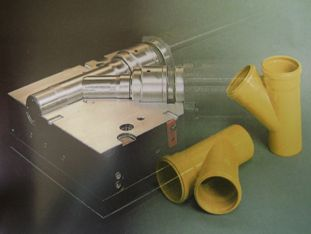

|
2.2.3 SICAK-ÝÞ TAKIM ÇELÝKLERÝ

Resim2.2.3.1 Sýcak iþ çelik üretimi

Resim 2.2.3.2 Sýcak iþ çeliði kullanýlarak yapýlan kalýp
Oda sýcaklýðýnda þekillendirilemeyen demir, çelik ve diðer metallerin ýsýtýlarak þekillendirilmesi sýcak iþ çeliklerine olan ihtiyacý doðurmuþtur.
Sýcak iþ çeliklerinde aranan belli baþlý özellikler;
- Yüksek sýcaklýkta mekanik özelliklerini koruyabilmesi(Sertlik, yeterli akma ve çekme dayanýmý, yeterli temper direnci vb.),
- Yüksek sýcaklýkta aþýnma dayanýmlarýnýn yüksekliði
- Isý iletkenliðinin yüksekliði
1- Enjeksiyon Döküm Kalýplarý
2- Ekstrüzyon Kalýplarý
3- Dövme Kalýplarý
4- Kalýp ve Boru Presleri ve Aksamlarý
5- Delici Zýmbalar ve Kalýplarý vb.
Belli baþlý kullanýlan sýcak-iþ çelikleri ise þunlardýr. 1.2344 , 1.2343 , 1.2365 , 1.2367, 1.2714 , 1.2581 , 1.2606, 1.2713, 1.2885
Sýcak Ýþ Takým Çelikleri
1.2344 : Ýyi bir süneklik ile birleþen yüksek sýcaklýkta aþýnma dayanýmýný yitirmeyen bir çeliktir. Isýl þoklara karþý dayanýmý, yüksek seviyedeki saflýðý, homojenliði sebebi ile çok geniþ bir kullanýmý vardýr. Yaygýn olarak alüminyum gibi hafif metal alaþýmlarý için aðýr yükte çalýþan sýcak iþ kalýplarý, metal ekstrüzyon preslerinde yað ve hava soðutmalý presleme ve delme mandrellerinde ve dövme kalýplarýnda kullanýlýr.
1.2343 : Hafif metallerin enjeksiyon kalýplarýnda ekstrüzyon presleri kalýplarýnda kullanýlýr. 1.2344' e göre ýsýl iletkenliði ve tokluðu daha iyidir.
1.2365 :Yüksek sýcaklýkta sertliðini yitirmeyen yüksek ýsý iletkenliði olan çeliktir. Aðýr metal alaþýmlarý için pres döküm kalýplarý ve karýþýk iç burçlarý, presleme diskleri ve delme mandrellerinde kullanýlýr.
1.2714 : Yaðda ve havada sertleþebilen sýcak iþ çelikler arasýnda en iyi süneklik gösteren çeliktir. Cam üretim proseslerinde ekstrüzyon presleme için pres sapma baþlýðý form parça presleme takýmlarýnda kullanýlýr.
2.2.4 YÜKSEK HIZ TAKIM ÇELÝKLERÝ
Yüksek hýz çelikleri iyi sertleþebilirliðe sahip olduklarý için, bunlardan yapýlan takýmlar tuz banyosunda veya havada bile sertleþebilirler. Yüksek hýz çeliklerinin en genel uygulama alaný talaþ kaldýrma takýmlarýdýr. Yüksek sýcaklýklarda göstermiþ olduklarý yüksek mukavemetlerinden ötürü, yüksek hýz çelikleri, sýcak iþ takým çelikleri olarak ( örneðin sýcak kesiciler ve somun imal eden sýcak zýmbalama makinelerindeki zýmba malzemesi ) kullanýlýrlar.
Yüksek hýz takým çelikleri:
1.3343: Kesme, delme, bükme, delik açma iþlemlerinde kullanýlan kalýp ve aparatlarýnýn yapýmýnda, delme iþleminde kullanýlan matkap uçlarýnýn yapýmýnda, testere aðýzlarýnýn üretiminde, broþ, zýmba ve kýlavuz yapýmýnda kullanýlmaktadýr
1.3243: Yüksek kesme hýzlarýna sahip tüm kesme kalýplarýnda, özellikle matkap ucu ve broþlarda kullanýlýr. Yüksek kesme hýzlarýnýn ihtiyaç duyulduðu ve 1.3343' ün yetersiz kaldýðý yerlerde tercih edilir.
1.3247: Genellikle freze, testere aðzý, matkap uçlarý, þerit testere ve kýlavuz üretiminde kullanýlmaktadýr.
1.3207: Genellikle form verme takýmlarýnda, kesici takým uçlarýnýn üretiminde, kesme býçaklarýnýn aðýzlarýnda ve zýmba üretiminde kullanýlmaktadýr.
1.3208: Freze, yüksek hýzlardaki form verme takýmlarýnda, kesme iþlemlerinde kullanýlan takýmlarýn üretiminde kullanýlmaktadýr.
2.1.4 Plastik Kalýp Çelikleri

Resim 2.2.5.1 Plastik kalýp çeliklerinin endüstride kullanýmý
Ýmalat ve kalýp sektörünün kayda deðer kullaným sahasýna sahip çelik grubudur. Her türlü plastik bazlý malzemelerin muhtelif yöntemlerle þekillendirmesi bu grup çeliklerle mükemmel olarak gerçekleþtirmektedir. Plastik kalýp çelikleri, kullanýlan plastik hammaddenin cinsine göre aþýnmaya, basýnca ve korozyona maruz kalýrlar. Bu nedenle çok çeþitli plastik kalýp çelikleri geliþtirilmiþtir.
Plastik kalýplarýndan beklenen özellikler;
- Hýzlý iþlenebilirlik özelliði
- Isýl iþlem sýrasýnda boyut deðiþiminin az olmasý
- Parlaklýk
- Basýnç dayanýmý
- Aþýnma dayanýmý
Bu özelliklere göre, plastik kalýplarýnda kullanýlan çelikler aþaðýdaki sýnýflarda incelenebilir.
1-Yüzeysel Sertleþen Çelikler
2-Ön Sertleþtirilmiþ Çelikler
3-Çekirdeðine Kadar Sertleþen Çelikler
4-Korozyon Dayanýmlý Çelikler
5-Nitrasyon Çelikler
6-Kalýp Hamili Çelikler
2.2.5.1 Yüzeysel Sertleþen Çelikler:
Bu çelikler sementasyon gibi yüzey sertliðini arttýrýcý yöntemlerle sertleþtirildiðinde, aþýnmaya çok dayanýklý bir yüzey ve tok bir çekirdeðe sahip olurlar. Aþýnma dayanýmýnýn yüksek olmasý gereken bazý plastik enjeksiyon kalýplarý bu çeliklerden yapýlabilir. Havada, yaðda ve tuz banyosunda su veilebilir.
2.2.5.2 Ön Sertleþtirilmiþ Çelikler:
Bu çelikler kullaným kolaylýðý nedeniyle giderek daha çok talep görmektedir. Çoðu plastik kalýplarýnda 1100 N/mm2 (350 HV) çekme kuvveti yeterlidir. Ön serleþtirilmiþ çelikler bu sertlikte teslim edilir. 1.2312, 1.2738 bu tür çeliklerdendir. 1.2738 çeliðinin daha üstün özellikleri sebebi ile 1.2311 çeliði yavaþ yavaþ talep görmez hale gelmiþtir. Çok kalýn ölçülerde bile çekirdek sertliðini kaybetmemesi, ayna gibi parlayabilmesi ve desenlenebilmesi en önde gelen özelliklerdir. Ancak nikel içeriði yüzünden büyük kalýplarda iþleme kabiliyeti iyi deðildir. Büyük kalýplarda bu yüzden 1.2312 tercih edilir. Ýçerisindeki S(kükürt) ilavesi iþleme kolaylýðý saðlar. Parlaklýk ve desenleme kabiliyeti 1.2738 kadar iyi deðildir.
2.2.5.3 Çekirdeðine Kadar Sertleþen Çelikler:
Yüksek basýnçlarýn söz konusu olduðu plastik kalýplarýnda, basma mukavemetlerinin yüksek olmasý nedeniyle tercih edilirler. Yüzeysel sertleþen çeliklere göre avantajlarý sertliðin sadece yüzeyde deðil, çekirdeðe kadar sürmesidir. Bu yüzden, çok aþýndýrýcý plastiklerin kalýplarýnda özellikle tercih edilir. Örneðin, 1.2767 çeliði bakalit kalýplarýnda özellikle tercih edilirler. Çok iyi parlaklýk desenleme özelliði vardýr. 52 RC' ye serleþtirilebilirler.
2.2.5.4 Korozyona Dayanýmlý Çelikler:
PVC gibi kimyasal yollarla çelik üzerinde asit etkisi yapan plastiklerde kalýp çeliðinde "korozyon dayanýmý" aranýr. Cl (klor) gazýnýn H (hidrojen) ile birleþmesi sonucunda meydana gelen HCL (hidroklorik asit) zamanla kalýpta oyuklaþmalara sebep olur. Bunun yaný sýra, deðiþik sýcaklýklarda çalýþan iþyerlerinde sýk sýk görülen yoðuþma (kondensasyon) ve nemli ortamlarda de nemden kaynaklanan korozif etki, paslanmaz çelik kullanýmýný arttýrýr. Bu nedenle çelik imalatçýlarý plastik kalýplarýndan beklenen diðer özellikle ilave olarak "korozyon dayanýmý" olan çelikleri geliþtirmiþlerdir. Böylelikle kalýplarý krom kalýplarý krom kaplamaya gerek kalmaz. Soðutma kanallarýnda paslanma olmadýðýndan maksimum soðutma verimi elde edilebilir.
2.2.5.5 Nitrasyon Çelikleri:
Plastik enjeksiyon ve ekstrüzyon makinelerinin vida ve silindirlerinde kullanýlan çeliklerdir. 30 - 35 RC arasýnda bir sertlik deðerinde ve doðrultulmuþ olarak kullanýcýya teslim edilir. Özellikle 1.2891 ve 1.2307 çelikleri en çok kullanýlanlardýr.
|